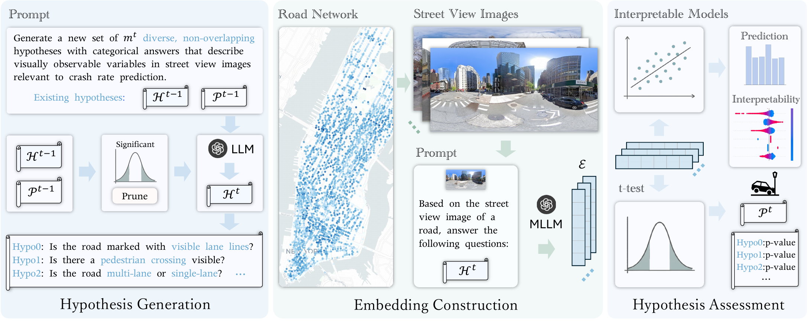
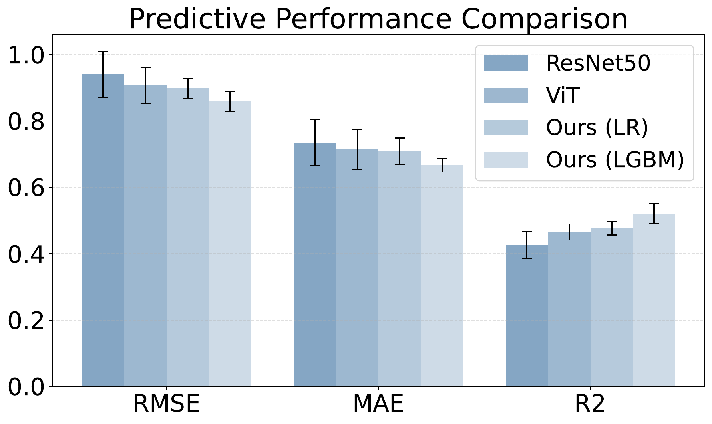
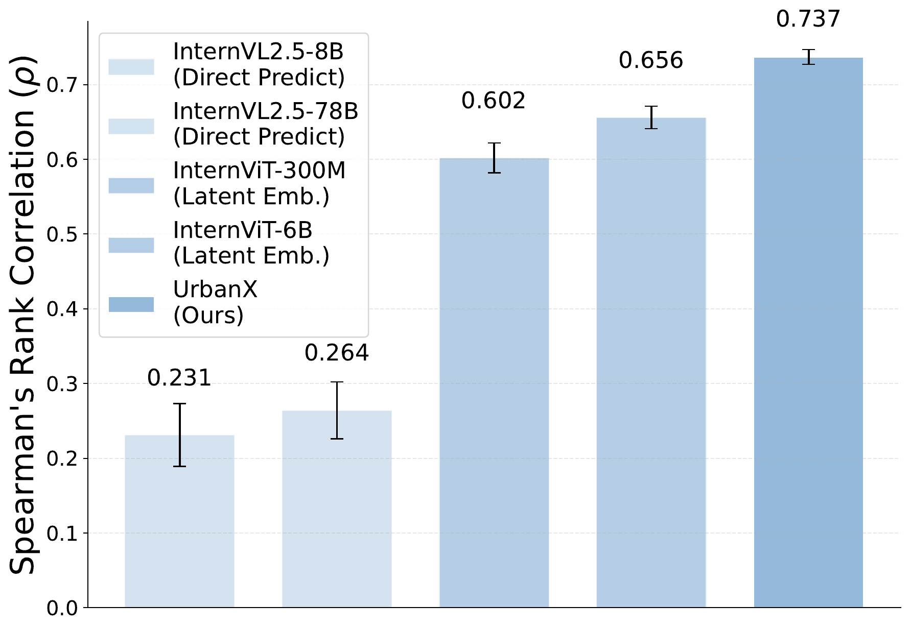
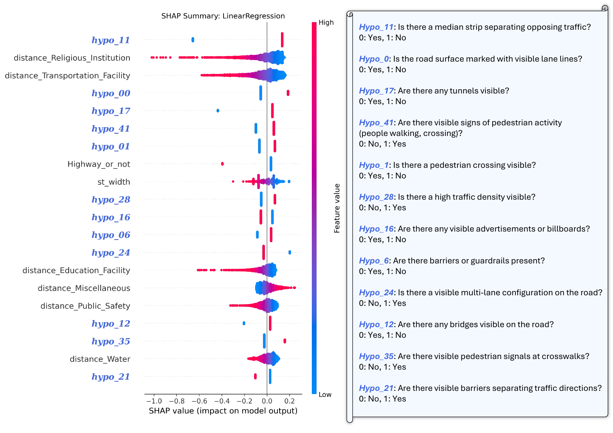
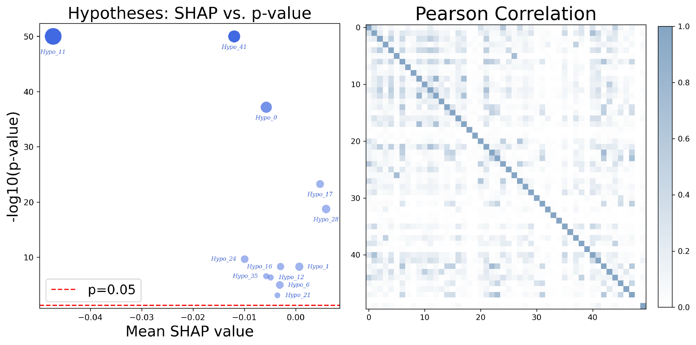
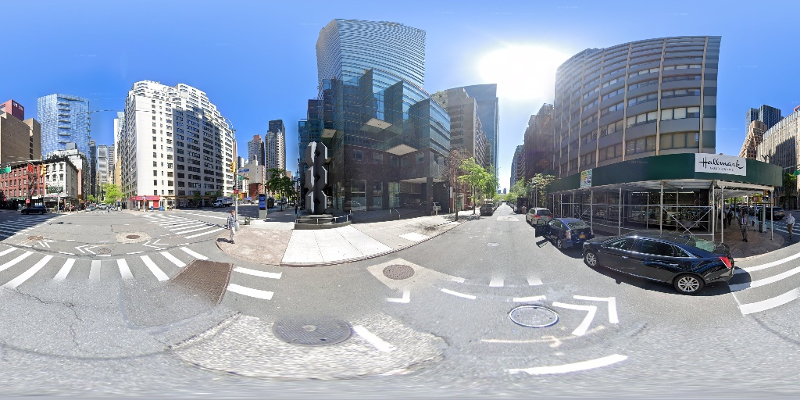
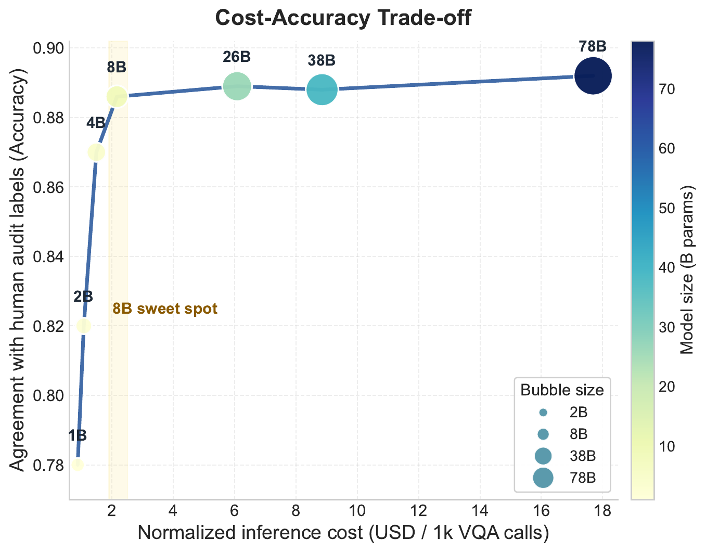

Abstract
Urban and transportation research has long sought to uncover statistically meaningful relationships between key variables and societal outcomes such as road safety, aiming to generate actionable insights that guide the planning, development, and renewal of urban mobility systems. However, traditional workflows face several key challenges: (1) reliance on human experts to propose hypotheses, which can be time-consuming and prone to confirmation bias; (2) limited interpretability, particularly in deep learning approaches; and (3) underutilization of unstructured data that encodes critical urban context. To address these limitations, we propose a Multimodal Large Language Model (MLLM)-based approach for interpretable hypothesis inference, enabling the automated generation, assessment, and refinement of hypotheses concerning urban form and transportation safety. Specifically, we leverage MLLMs to generate road safety-relevant questions and automatically answer them based on street view images (SVIs) through visual question answering (VQA). These responses are used to construct interpretable embeddings for each SVI, which are then incorporated into linear statistical models for transparent and explainable regression analysis. UrbanX supports iterative hypothesis testing and refinement guided by statistical evidence, such as coefficient significance, thereby enabling rigorous, transparent scientific discovery of previously overlooked correlations between urban design and transportation risk. We evaluate our framework on Manhattan street segments and demonstrate that it outperforms pretrained deep learning baselines while offering full interpretability. We demonstrate that UrbanX matches or exceeds the explanatory power of existing expert-curated built environment variables, validating its potential to replace labor-intensive feature engineering with automated, scalable discovery of potential safety-related factors. Beyond road safety, UrbanX can serve as a general-purpose foundation for hypothesis-driven urban mobility analysis, extracting structured insights from unstructured data across diverse socioeconomic and environmental outcomes. This approach establishes a scalable and trustworthy pathway for interpretable, data-driven scientific discovery in urban and transportation systems using foundation models such as MLLMs.
Method

Results




VQA Case Study


BibTeX
@article{tang2026street,
title={From street views to urban science: Discovering road safety factors with multimodal large language models},
author={Tang, Yihong and Qu, Ao and Yu, Xujing and Deng, Weipeng and Ma, Jun and Zhao, Jinhua and Sun, Lijun},
journal={Transportation Research Part C: Emerging Technologies},
volume={188},
pages={105692},
year={2026},
publisher={Elsevier}
}